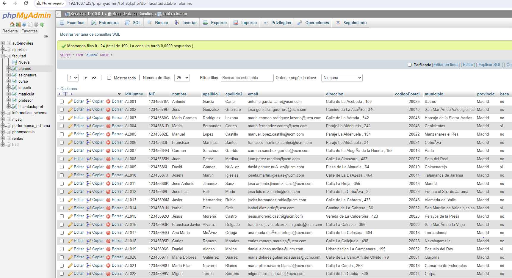
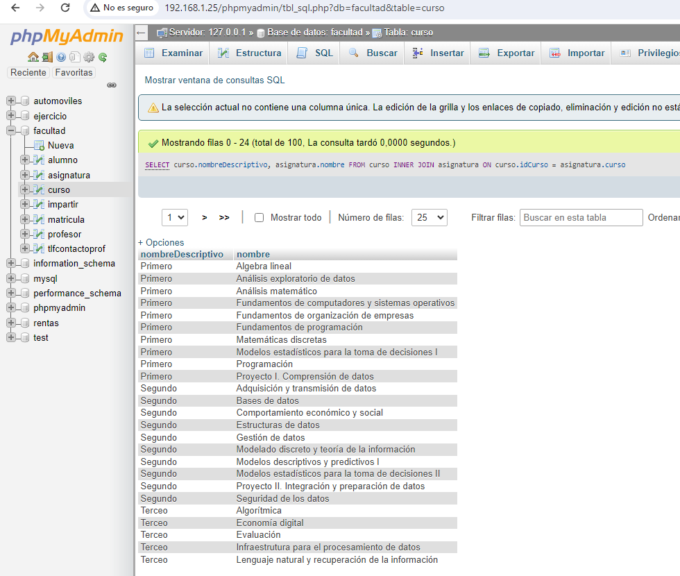
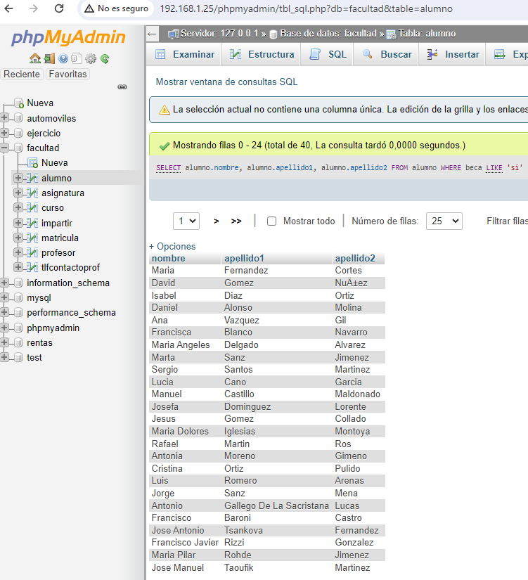
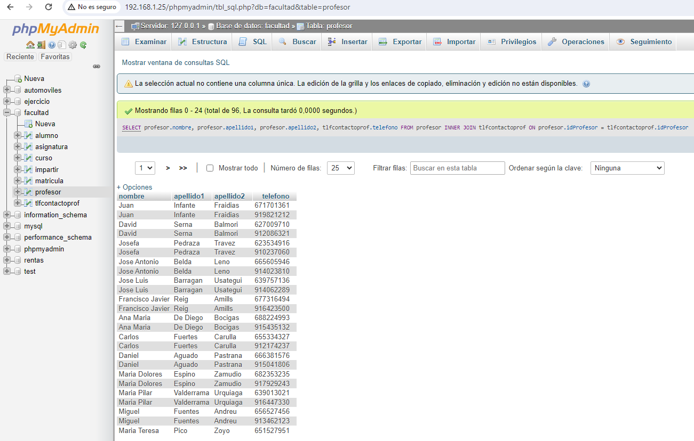
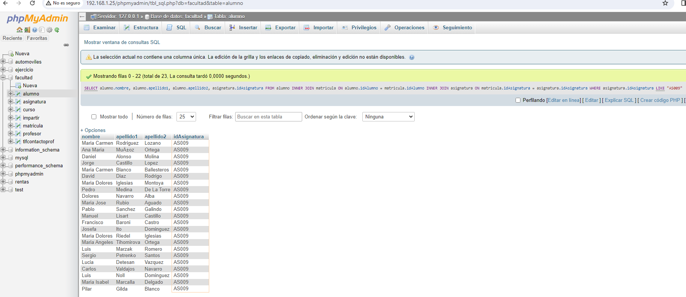
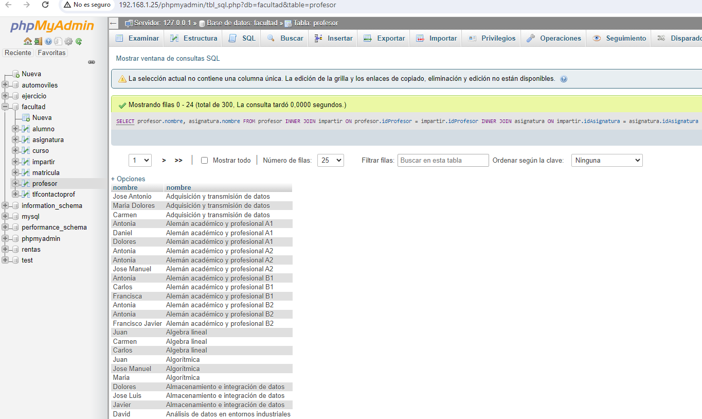
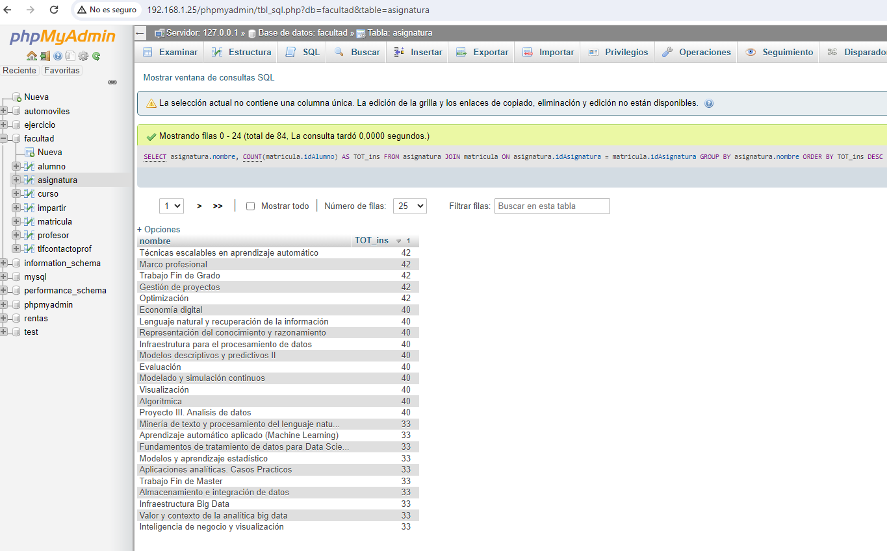

h
Consulta 8. Obtener el listado de ALUMNOS que les da clase el PROFESOR con ID PR048 (JOSE MANUEL)
Consulta 1. Obtener el listado de todos los alumnos de facultad
Consulta 2. Obtener el listado de cursos(Nombre) y las asignaturas que tiene
Consulta 3. Obtener el listado (NOMBRE y APELLIDOS) de ALUMNOS QUE TENGAN BECA
Consulta 4. Obtener el listado de PROFESORES(NOMBRE APELLIDO) y su NUMERO DE CONTACTO
Consulta 5. Obtener el listado de ALUMNOS (TODOS LOS CAMPOS) que estan inscritos a la ASIGNATURA de programacion AS009
Consulta 6. Obtener el listado de PROFESORES y ASIGNATURAS que imparten
Consulta 7. Mostrar la ASIGNATURA que tiene mas ALUMNOS INSCRITOS y su TOTAL
Consulta 8. Obtener el listado de ALUMNOS que les da clase el PROFESOR con ID PR048 (JOSE MANUEL)
Consulta 9. Obtener el listado de CURSOS con ASIGNATURAS y el MAESTRO que las imparte
Consulta 10. Obtener el listado de ALUMNOS con ASIGNATURAS que cursa PROFESOR que le imparte y CURSO al que pertenece